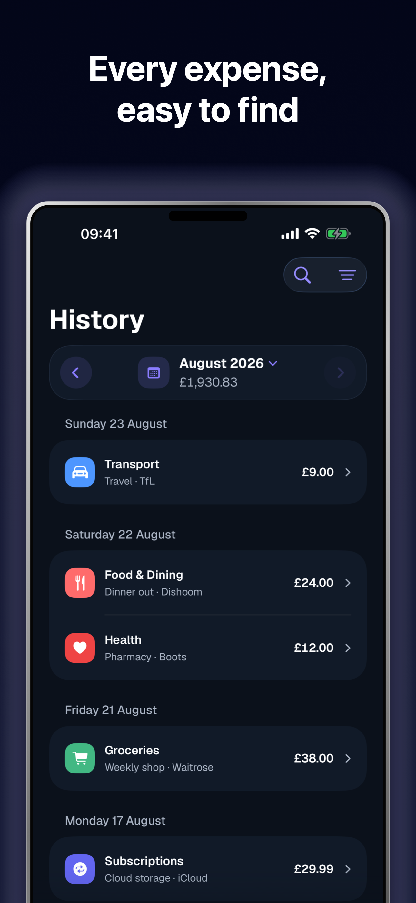
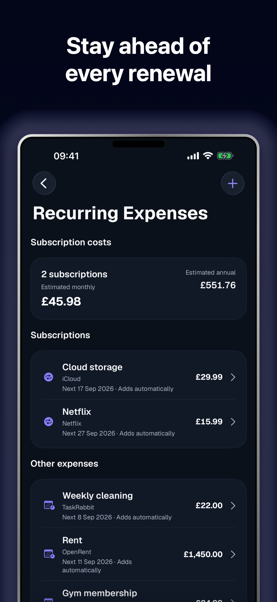

Spendra
Track spending and budgets, synced privately across your devices.




About
Make everyday spending easier to see and easier to plan. Spendra is a focused expense tracker for recording purchases, setting budgets and understanding where your money goes — across iPhone, iPad, Mac and Apple Watch.
- Add and organise expenses with categories, accounts, tags and notes.
- See a clear dashboard and searchable history with filters for the details that matter.
- Explore analytics, trends and comparisons to understand spending over time.
- Set overall and category budgets, with reminders to help you stay on track.
- Save recurring expenses and templates for faster, more consistent entry.
- Review subscription detections and cost insights, and dismiss suggestions when they are not useful.
- Scan receipts with Apple Vision, where supported by the device and permission settings.
- Add expenses quickly with Siri and App Intents, from the Mac menu bar, or on Apple Watch.
- Export your records as CSV, JSON or PDF, and browse spending through calendar history.
- Use Face ID privacy lock and manage reminders, appearance and local preferences from Settings.
Spendra syncs records through a private iCloud database. Apple Watch entries transfer to the paired iPhone through WatchConnectivity and then sync; availability depends on pairing and connection. Preferences remain device-local.
Choose from the full ISO currency list. Spendra reports each currency separately and does not convert between currencies or provide exchange rates. Spendra has no sign-in requirement and does not connect to banks or claim to provide financial advice.
Frequently asked questions
Is Spendra free?
Yes. Spendra is free to use with no sign-in required. Optional in-app tips let you support development if you'd like, but no feature is locked behind a paywall.
Do I need to create an account?
No. Spendra has no sign-in or account requirement — sync relies on your existing iCloud account.
How does Spendra sync across my devices?
Records are stored in a private iCloud database and synchronised automatically across your iPhone, iPad and Mac. Preferences and settings stay device-local.
Does Spendra connect to my bank?
No. Spendra does not connect to bank accounts. You enter expenses manually or by scanning a receipt.
Can I track expenses in multiple currencies?
Yes. Spendra supports the full ISO currency list. Each currency is reported separately — Spendra does not convert between currencies or provide exchange rates.
How does receipt scanning work?
With the camera permission enabled, Spendra uses Apple's Vision framework to extract details from a photographed receipt so you can review and save them as an expense.
Can I use Spendra on Apple Watch?
Yes. A quick-add complication and app on Apple Watch let you log an expense from your wrist. Entries transfer to your paired iPhone through WatchConnectivity and then sync; a paired connection is required.
Can I set up recurring expenses or budgets?
Yes. You can save recurring expenses and templates for faster entry, and set both an overall budget and per-category budgets with optional reminders.
Can I export my data?
Yes. Export your records as CSV, JSON or PDF at any time from Settings.
How do I delete my data?
You can delete individual records from within the app, or reset all records from Settings — this propagates the deletion across your synced devices.
Can I lock the app for privacy?
Yes. Spendra supports a Face ID (or other device authentication) privacy lock that you can enable in Settings.